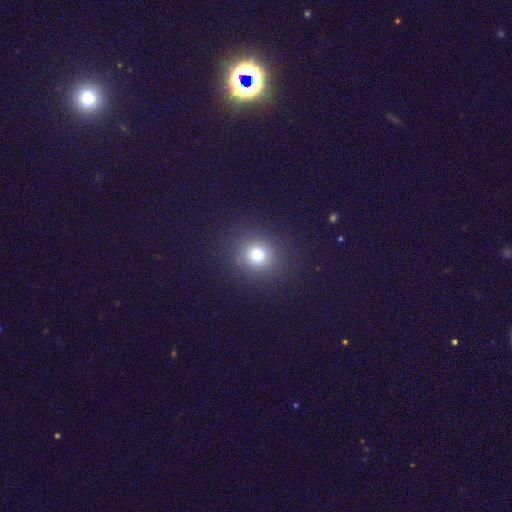

ဒီလို ရေဒီရေးရှင်း ရောင်ခြည်တွေ အရှိန်အဟုန် နဲ့ မှုတ်ထုတ်နေတဲ့ မဟာတွင်းနက်ကြီးဟာ သူ့ရဲ့ ရေဒီယိုရောင်ခြည်ထွက်ပေါ်ရာ ဝင်ရိုးကို ရုတ်တရက် ၉၀ ဒီဂရီ လှည့်လိုက်တာကို ပညာရှင်တွေ ရှာဖွေ တွေ့ရှိ ခဲ့ပါတယ်။
ဒီလို လှည့်လိုက်တဲ့ ဝင်ရိုးရဲ့ ဦးတည်ရာ ကတော့ ကမ္ဘာမြေဆီကိုပဲ ဖြစ်ပါတယ်။
ဒီလို ဂလက်ဆီ ကြီးတွေရဲ့ ဗဟိုက လှုပ်ရှားမှု ပြင်းထန်ပြီး ဆာလောင်မွတ်သိပ် နေတဲ့ မဟာတွင်းနက် ကြီးတွေကို Active galactic nuclei (AGN) တွေလို့ ခေါ်ပါတယ်။ ဒီ Active galactic nuclei (AGN) တွေဟာ သူ့ပတ်ဝန်းကျင်က ကြယ်တွေ၊ ဓါတ်ငွေ့ တိမ်တိုက်တွေနဲ့ ဖုန်မှုန်တွေကို မဟာဒယား စုပ်ယူဝါးမြို စားသုံးနေတာ ဖြစ်ပါတယ်။
ဒီလို စုပ်ယူ စားသုံး နေတဲ့ AGN တွေကနေ စွမ်းအင်မြင့် high energy particles အမှုန်တွေကို အလင်းလျှင် နီးပါးမြန်တဲ့ အမြန်နှုန်းနဲ့ ပြန်လည် မှုတ်ထုတ် ပေးနေပါတယ်။ ဒီလို ထွက်လာတဲ့ အဟုန်မြင့် ဓါတ်ငွေ့အမှုန်တန်း ကြီးကို relativistic jets လို့ ခေါ်ပါတယ်။
ဒီ AGN တွေကို ကမ္ဘာက မြင်ရတဲ့ အနေအထားပေါ် မူတည်ပြီး အမျိုးအစား ခွဲကြပါတယ်။
PBC J2333.9-2343 ဟာ အလွန် ကြီးမားတဲ့ ဂလက်ဆီကြီး ဖြစ်ပါတယ်။ ဘယ်လောက်တောင် ကြီးသလဲ ဆိုရင် သူ့ရဲ့ အကျယ်ဟာ အလင်းနှစ် ၄ သန်းတောင် ရှိပါတယ်။
ဒီဂလက်ဆီ ကြီးကို မူလက ရေဒီယို ဂလက်ဆီ အဖြစ် သတ်မှတ်ခဲ့ ကြပါတယ်။ ဆိုလိုတာက သူ့ရဲ့ AGN က ထုတ်လွှတ်တဲ့ ဓါတ်ရောင်ခြည် တန်းကြီးရဲ့ ဝင်ရိုးဟာ ကမ္ဘာကနေ ကြည့်ရင် ကန့်လတ်ဖြတ် ဖြစ်နေပါတယ်။
ဒါပေယ့် အခုနောက်ဆုံး ပြုလုပ်တဲ့ သုတေသန ရလဒ်တွေ အရ ဒီ ဂလက်ဆီဟာ ရေဒီယို ဂလက်ဆီ တစ်ခု မဟုတ်ပဲ ဘလေဇာ (Blazer) အမျိုးအစား ဂလက်ဆီကြီး ဖြစ်နေပါတယ်။ တနည်းအားဖြင့် သူ့ဆီက ထွက်တဲ့ ဓါတ်ရောင်ခြည် တန်းကြီးဟာ ကမ္ဘာဆီကို တိုက်ရိုက် ဦးတည် လာနေတာပါ။
ဒီအချက်သာ မှန်ကန် ခဲ့မယ်ဆိုရင် ဒီ ဂလက်ဆီဟာ သူထုတ်လွှင့်နေတဲ့ ဓါတ်ရောင်ခြည် တန်းကြီးရဲ့ ဦးတည်ရာ ဝင်ရိုးကို ၉၀ ဒီဂရီခန့် ရုတ်တရက်လမ်းကြောင်းပြောင်း ပစ်ခဲ့တာပဲ ဖြစ်ပါတယ်။
သိပ္ပံ ပညာရှင် တွေဟာ သူတို့ရဲ့ တွေ့ရှိချက်ကို မတ်လ ၂၀ ထုတ် Monthly Notices of the Royal Astronomical Society သုတေသန ဂျာနယ်မှာ တင်ပြထားတာ ဖြစ်ပါတယ်။

ဂါဆီယာ ဟာ Millennium Institute of Astrophysics က နက္ခတ် သုတေသီ ပညာရှင် တစ်ဦး ဖြစ်ပါတယ်။ သူမနဲ့ အဖွဲ့ဟာ PBC J2333.9-2343 တွင်းနက်ကြီးကို အသေးစိတ် လေ့လာ တိုင်းတာမှုတွေ ပြုလုပ်ခဲ့ ကြတာ ဖြစ်ပါတယ်။
ဒီလို တိုင်းတာ ခဲ့ရာမှာ လျှပ်စစ်သံလိုက် လှိုင်းစဉ် (electromagnetic spectrum) ခွင် တစ်ခုလုံး အပြည့် တိုင်းတာ ခဲ့ကြပါတယ်။ လှိုင်းအလျား အရှည်ဆုံး ဖြစ်တဲ့ ရေဒီယို လှိုင်းတွေကနေ လှိုင်းအလျား အတိုဆုံး နဲ့ စွမ်းအင် အမြင့်ဆုံး ဖြစ်တဲ့ ဂမ်မာ ရောင်ခြည် တွေအထိ လှိုင်းခွင်အပြည့် တိုင်းတာခဲ့ကြတာ ဖြစ်ပါတယ်။
သူတို့ရဲ့ တိုင်းတာမှု တွေအရ ဒီ ဂလက်ဆီရဲ့ သွင်ပြင် လက္ခဏာ တွေဟာ ဘလေဇာ တစ်ခုရဲ့ သွင်ပြင် လက္ခဏာတွေ ဖြစ်တယ် ဆိုတာ တွေ့ရှိခဲ့ ပါတယ်။ ဘလေဇာ တစ်ခုလိုပဲ လင်းထိန်တောက်ပလာလိုက် မှိန်သွားလိုက်နဲ့ ဖြစ်နေပါတယ်။ နောက်ပြီး ဘလေဇ တခုလိုပဲ ဓါတ်ငွေ့ရောင်ခြည် လှိုင်းတန်းတွေ ထွက်ပေါ် နေပါတယ်။
ဒါ့ကြောင့် သူတို့က ဒါဟာ ဘလေဇာ ဖြစ်ရမယ်လို့ ကောက်ချက် ချခဲ့ ကြပါတယ်။
နောက်ပြီး ဒီ ဂလက်ဆီရဲ့ တဖက်တချက်မှာ ဖြစ်ပေါ်နေတဲ့ ပူဖေါင်းကြီး နှစ်ခုကိုလဲ တွေ့ရှိခဲ့ ကြပါတယ်။ ဒီပူဖေါင်း တွေဟာ ဘလေဇာက ထွက်လာတဲ့ ဓါတ်ရောင်ခြည်တန်းတွေနဲ့ ပတ်ဝန်းကျင်က ဓါတ်ငွေ့တွေ တိုက်မိပြီး ဖြစ်ပေါ်လာတဲ့ ပူဖေါင်းကြီးတွေ ဖြစ်ပါတယ်။
(ဒီနေရာမှာ ပူဖေါင်းဆိုတာက ရေဒီယို ဓါတ်ရောင်ခြည် ဖမ်းတဲ့ အာရုံခံ ကိရိယာ တွေမှာ ပေါ်နေတဲ့ မျက်စေ့နဲ့ မမြင်ရတဲ့ ရေဒီယို ဓါတ်ကြွနေတဲ့ ရပ်ဝန်းတွေ ဖြစ်ကြပါတယ်။)
ဒါပေမယ့် ဒီ ပူဖေါင်းတွေဟာ လက်ရှိ သက်ဝင်လှုပ်ရှား နေကြတဲ့ ပူဖေါင်းတွေ မဟုတ်ကြပဲ ယခင် အတိတ်က အဖြစ်အပျက် တွေကနေ ကြွင်းကျန် ရစ်ခဲ့တဲ့ ပူဖေါင်းတွေ ဖြစ်နေပါတယ်။ တနည်းအားဖြင့် ဒီ ပူဖေါင်းတွေ ဖြစ်ပေါ်နေတဲ့ နေရာတွေဟာ ယခင်က ရေဒီယို ရောင်ခြည်တန်း တွေ ဖြတ်သန်း ထိုးဖေါက် ခဲ့ဖူးတဲ့ အရပ်မှာ ပေါ်ထွန်း နေတာ ဖြစ်ပါတယ်။
ဒါဟာ ဘာကို ပြနေလဲ ဆိုတော့ အတိတ်က ဒီဝင်ရိုး တလျှောက် ဓါတ်ရောင်ခြည်တန်း ရှိခဲ့တယ် ဆိုတာပဲ ဖြစ်ပါတယ်။ ဒါပေမယ့် အခုတော့ ဒီနေရာမှာ ဓါတ်ရောင်ခြည်တန်းတွေ မရှိ ကြတော့ပါဘူး။ တနည်း ပြောရရင် ဓါတ်ရောင်ခြည် တန်းတွေရဲ့ ဦးတည်ရာ အရပ်ဟာ အတိတ်က နေရာမှာ မဟုတ်တော့ပဲ ဦးတည်ရာ အရပ် ပြောင်းသွားခဲ့တယ် ဆိုတာပဲ ဖြစ်ပါတယ်။
ဒါဆို ဒီလို ရုတ်ချည်း လမ်းကြောင်း ပြောင်းသွားအောင် ဘာက လုပ်ပေး ခဲ့တာလဲ။ နက္ခတ်ပညာရှင် တွေဟာ ဒီမေးခွန်း ကို အဖြေ မပေးနိုင် ကြသေးပါဘူး။ ဒါပေမယ့် အဖြေ ပေးနိုင်အောင် ကြုးစားနေ ကြပါတယ်။
သီအိုရီ တစ်ခုကတော့ ဂလက်ဆီ နှစ်ခု ပေါင်းသွားတာမို့ လို့ ဆိုပါတယ်။ သူ့ထက် ပိုကြီးတဲ့ ဂလက်ဆီ ကြီးတစ်ခုနဲ့ တိုက်မိပြီး မူရင်း ဂလက်ဆီ အတွင်းက ကြယ်တွေနဲ့ အခြား ဓါတ်ငွေ့ တိမ်တိုက်တွေရဲ့ တည်နေရာ ပြောင်းသွားတာ ကြေင့်လို မှန်းဆ ကြပါတယ်။ ဒါပေမယ့် ဒီ သီအိုရီကို သက်သေပြဖို့ ဆိုတာတော့ နောက်ထပ် သုတေသန များစွာ ပြုလုပ်ဖို့ လိုနေအုံးမှာ ဖြစ်ပါတယ်။
Ref: Object mistaken as a galaxy is actually a black hole pointed directly at Earth | Live Science